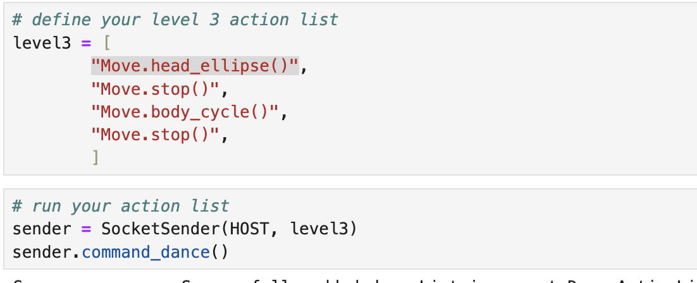

flowchart LR
A(("Software setup")) --> B(("Network setup"))
B --> C(("Hardware check: network, camera and audio"))
C --> D(("Google Gemini"))
C --> H(("StanfordQuadruped Dance"))
E --> F(("ROS2 Service"))
E --> G(("Line following"))
C --> E((" Linux ROS2 "))
%% Define custom styles for each node
classDef nodeStyle width:150px, text-align:center, white-space:pre-wrap;
classDef coloredNode fill:#1f96,stroke:#333,stroke-width:2px,width:150px,white-space:pre-wrap,text-align:center;
classDef funNode fill:#ef96,stroke:#333,stroke-width:2px,width:150px,white-space:pre-wrap,text-align:center;
%% Apply the custom style to the nodes
class A,C,E,H nodeStyle;
class B,H coloredNode;
class D,F,G funNode;
%% Add slide references to each block (adjust according to your presentation setup)
click A "#software" "Go to Software setup slide"
click B "#network" "Go to Network setup slide"
click C "#hardware" "Go to Hardware slide"
click D "#gemini" "Go to Google Gemini slide"
click E "#ros2" "Go to ROS slide"
click F "#music" "Go to ROS slide"
click G "#linefollowing" "Go to ROS line following slide"
click H "#dance" "Go to ROS line following slide"
%%click H "#multicast" "Go to Multicast setup slide"
Robot Controls
Workshop - A minimal introduction to Minipupper V2
Li Bai ![]()
Temple University
March 1, 2025
Mangdang
A quadruped robot dog originated from a stanford project click here
- A Mangdang v2 and a Raspberry Pi Compute Module 4 2GB

- software development is done using Windows 10/11 WSL
- Linux, Python 3
- Robot Operating System (ROS) and Gazebo
- ReInvent Workshop 2022 for Dance Robot (Gan and Hansen 2022)
Install Window Terminal
- seems to be better than power shell on windows 11

eduroam - method 3
Generating a Password Hash (case sensitive, space sensitive)
password Hash: one-way cryptographic representation of a password

Generate your Password Hash
- Now we open a new terminal shell to setup 18.04 distro
- replace “password” in command line with your password used to log in to school organization email
- enter to regenerate unique hash
- save value for your WiFi access (in Google doc or notebook)!
- Line 1: use your school email address
- Line 2: use the hash passcode that you previously saved in a document or notebook
- make sure you see a new driver system-boot
- IP address does not show up on first time boot up, wait for power on sound, then disconnect power and reconnect
- reboot second time, you can see the IP address

Web Control - Activate the robot
- If you see the IP address on the screen in the second time power on, type
http://[ipaddress]:8080for a web remote control


Revise the WiFi in Jupyter Lab
- Open a browser, type
http://[ipaddress]:8888 - password
mangdang


at least keep one connection working
50-cloud-init.yamlis indentation sensitive, any mistake will have no IP address shownIf file changed, try the following commands to ensure if you have any errors before reboot
- may need to use an HDMI monitor and a USB keyboard to troubleshoot the YAML file
Hardware Check
- download the mangdang using the following command


Stanford - Dance Move using Jupyter
check StanfordQuadruped inside of mangdang folder
If not,
- navigate into the folder `
Jupyter Client`folder - run jupyter client code `jupyter Client for Minipupper`


- run server code

- run client code


- run client code
- run client code 
ROS2 Installation
git clone https://github.com/mangdangroboticsclub/mini_pupper_ros.git -b ros2-dev mini_pupper_ros
cd mini_pupper_ros
bash ./pc_install.sh
sudo apt install -y ros-humble-demo-nodes-cpp ros-humble-rmw-fastrtps-cpp
ros2 topic listnot running, try
ensure camera enabled in
~/ros2_ws/src/mini_pupper_bringup/config/config.yamlas follows
Gemini

- download the code to
cd ~
git clone https://github.com/lbaitemple/apps-md-robots
cd apps-md-robots
pip install -r requirements.txt - add credential file in env.sample (Pregenerated)
RPi camera Setup


ROS2 on Minipupper
- install ROS2 (if ros2_ws folder gets corrupted)
rm -rf ~/ros2_ws
git clone https://github.com/mangdangroboticsclub/mini_pupper_ros.git -b ros2-dev mini_pupper_ros
cd mini_pupper_ros
bash ./pupper_install.sh- Revise camera ymal file and copy it to .ros
mkdir -p ~/.ros/camera_info
nano ~/mini_pupper_ros/mmal_service_16.1.yaml
cp ~/mini_pupper_ros/mmal_service_16.1.yaml
nano ~/.ros/camera_info/
Gan, Afreez, and Matt Hansen. 2022. “Dance of the Cloud Connected Robots.” 2022. https://catalog.us-east-1.prod.workshops.aws/workshops/511d7599-73bd-4142-bd6b-fa83dbe3d8ce/en-US.